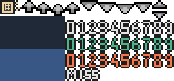
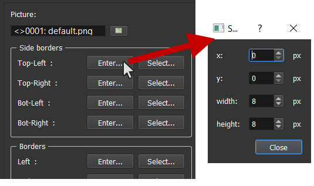
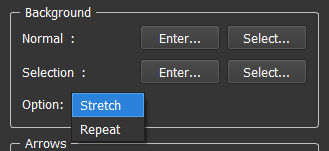

Window Skins
A WindowSkin is a picture that is cut for being used as a design for window boxes (text dialog for example), arrows (end of message, target selection, up/down), texts in battles (damage numbers with normal, critical, heals, and miss). RPG Paper Maker doesn't have a fix template, you can edit the cutting of each element of your WindowSkin by yourself.
Here is the default Window Skin image used:

Create a Window Skin and / or change default Window Skin
Got to Systems Manager > System.

- On left: Change default.
- On right: Manage all WindowSkins.
Edit WindowSkin
To view a cutting, put your mouse on the widget associated (example: top-left border). You'll see a red rectangle. If you want to change it, there are two ways.
Enter
Click on the Enter... button to open a dialog box and edit the rectangle with input numbers.

Select
Click on the Select... button and draw the rectangle with your mouse directly on the picture preview.

Properties
Picture: The picture used by the WindowSkin.- Side borders: The side borders used for the window boxes.
- Borders: The borders used for the window boxes.
-
Background:

Normal: The background image used for the window boxes.Selection: The background image used for the window choices / tabs when selected.Option:Repeat: Repeat the background image for larger windows.Stretch: Stretch the background image for larger windows.
-
Arrows:
Target selection: The arrows animation used for the battle target selection.End of message: The arrows animation used for the command show text command.Up / Down: The arrows used for the input number.
- Texts:
Normal damage: The texts numbers used for normal damages.Heal damage: The texts numbers used for heal damages.Critical damage: The texts numbers used for critical damages.Miss: The texts numbers used for miss damages.